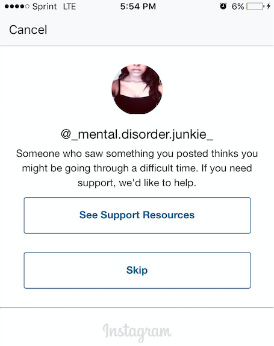

The Human (Mis)Connection
Instagram, led by their owner, Facebook, who bought out Instagram in 2012, began an effort to find a more nuanced approach to dealing with these younger accounts that were posting content that went against their Terms of Use (i.e. cutting selfies, eating disorder tips, suicidal quotes).
Over the past two years, the company has been developing a tool that recruits the online community of Instagram users to become sort of watchers over their fellow man. When they see content that someone has posted that they believe could be showing signs of something more serious, then they can report said account to Instagram who then sends a pop up message to the troubled teen with a list of possible resources. There is a stock message generated, such as the one shown above that was taken by Marybeth when she was awoken one morning to find the alert.

“For someone who doesn't want help it's more frustrating,” said Marybeth, describing the efficacy of the tool in teens. “Whereas for me it's like redundant. It even says in my bio that I'm in treatment, so the fact that it's telling you that you need support or resources I already have is annoying.”
Dr. Reidenberg, the doctor from SAVE who has been working with technology and social media companies on tools like this for the past ten years, believes that the tool is more effective than Marybeth and other teens interviewed for this article would agree. In a phone interview, he explained that the tool allows the distressed users to be easily connected to a chat function or a lifeline.
“It also allows people to be prompted as to what to say, and that’s really important because often times in crisis people don’t know what to say or what to do,” said Reidenberg.
The tool was only released this past fall, so it is too early to test the efficacy of it in the real or virtual world, but something that both the experts and the teens using the app can agree on is that it is far better than just shutting down the accounts entirely.
"You know there's this tendency in coverage of pro-ana and self-harm related content to really kind of almost demonize the posters and the people who are posting this content,” said Clare Mysko, the CEO of NEDA (National Eating Disorder Association), who was also heavily involved in the development of the new tool. She said how most of these kids are struggling with very serious mental health issues, and that by simply shutting down their account - essentially cutting off one of their few sources to human contact (even if it is through an app) - you’re just further marginalizing them.
“You need to remember that these people posting are in need of help and seeking community, that's the reason they’re on there,” she said.
And it’s true that a lot of the teens that are active on Instagram, particularly when they’ve begun seeking professional treatment outside of their virtual reality soon change their social media habits to reflect a healthier support network.
Marybeth says that this trend of switching from a negative account, one that encourages your eating disorder or depression, to one that is a recovery account is something that she has seen quite often.
“Some people will use it more for their struggling and then when they decide to recover they will clear all of their pictures and stuff and end up turning it into a recovery account,” she said. She describes herself as being “nowhere near” being considered a recovery account. Instead, she would characterize her account as a diary, a theme that was reoccurring throughout many other interviews.
“Like in your diary you write things that you don't want anyone to know, and you kind of keep them to yourself and it's your way of getting that out in physical words,” Marybeth said. “But at the same time you're not really getting any support or anyone that can relate. It's all still just you whether you write it out, it's still in your head.”
The issue that a lot of the girls that I spoke with that they kept drawing back to was that they didn’t feel comfortable telling their family or friends about what they were going through, but they still yearned for some kind of support network that could relate to what they were going through.
“When you're in that community sharing with those hashtags it ends up going to the people that are sharing the same related things as you are. You don't have like that shame or guilt that it's even wrong to be going through what you're going through,” said Marybeth.
The gap, clearly evidenced by Marybeth’s repeated “fear” and “shame” of talking about her disorder is one that shouldn’t be too surprising for most, is that a lot of these teens are dealing with disorders that are highly stigmatized in our society. Specifically when it comes to self-harm and eating disorders, two mental conditions that take on very physical forms, there is the common thought that people are just doing this for attention. This perception rings even more true when it comes to teens that are posting about it online. But as Dr. Rosen, the psychologist from California State University explained this form of community building is not new, especially for marginalized teens.
“Community building has been around forever,” said Dr. Rosen. “The issue is, what are you being given?” He went on to explain how if a child is already that far deep in their psychological condition, they’re probably going to require treatment that’s more intensive than just the support of someone ‘liking’ your Instagram post.
“If someone's telling you the right way to cut yourself and hide it, that's probably not a very effective psychological treatment,” he said.
It seems, based on Dr. Rosen’s suggestions and the interviews with dozens of mentally affected teens, that the ‘good’ that seems to be coming from Instagram is not by fault of the company. Instead, it seems to be coming from the community finding creative solutions to combat the negativity that is fostered on the social media app.
Dr. Rosen, when asked about the Instagram tool, agreed that while Instagram’s “motivation is an open question”, it is a good idea to be trying to reach these at risk teens rather than completely shutting down their accounts.
“Because all they're trying to do is make people feel better. Or at the very least feel more normalized that their feeling is not odd,” he said.
What caused Dr. Rosen the most concern with this highly praised update, which Marybeth, Jess and Clare had also already noted, was the lack of human connection.
“Let’s say Joe notices that Suzie's feeling lousy. Joe thinks there's a problem: Suzie may try to kill herself. So Joe notifies Instagram or Facebook, what happens from there?” Dr. Rosen said during a Skype interview from his home in California. “That's my concern, because they're not saying that they're going to employ a stock of psychologists to be available. They're not saying they're going to do anything proactive.”
Though contacted on three separate occasions through email, the Facebook representative who worked with SAVE and NEDA on the Instagram update did not reply before publishing for comment.
Instagram’s attempts to help these vulnerable communities have definitely improved from what they once were, where they’d just shut down accounts without discretion. And both Clare Mysko from NEDA and Dr. Reidenberg from SAVE agree that, while they’re proud of their work so far with Instagram, there is still a lot that needs to be covered.
“I think social media companies have a big role to play in the public health ways,” said Mysko.
Dr. Rosen, however, believes that there is still a central and rather obvious - from a mental health background - element missing from these online tools: a human being.
“In terms of gaining empathy, there is this thing called virtual empathy. It does make you feel more socially supported, the problem with that is that real world empathy is about 5 and a half to 6 times better at making you feel socially supported,” said Dr. Rosen. “The way I always phrase it is it takes about 5 or 6 virtual hugs to equal one real world hug. And I'm not even sure that those virtual hugs are really feeling good, it just makes you feel socially supported. So it's tricky.”